everviz express
everviz (nå Teikna) Bacheloroppgave
- Min rolle
- Ansvarlig for prototype og teknisk utvikling
- Team
- 4 interaksjonsdesignstudenter
- Verktøy
- Figma, Figma Make, Claude Code, VS Code
- Periode
- Vår 2026 (bachelorprosjekt, UiB)
Beskrivelse
Et verktøy i everviz-plattformen som lar journalister gå fra et flynummer eller skipsnavn til en publiserbar kartvisualisering, samtidig som kilden til dataene kommer tydelig frem.
Kontekst
everviz er en plattform for interaktive datavisualiseringer som kart, grafer og diagrammer, blant annet brukt i nyhetsartikler. Våren 2026 undersøkte vi hvordan plattformen kunne brukes til å visualisere fly- og båtdata.
Når journalister skulle vise hvor et fly eller skip hadde vært, kunne prosessen kreve opptil ti steg og tre til syv ulike verktøy. De måtte finne objektet i en sporingstjeneste, eksportere data, konvertere filer og lage visualiseringen. Når det hastet med å publisere, valgte mange heller et skjermbilde fra Flightradar24 eller MarineTraffic. Jeg hadde hovedansvaret for prototyping og teknisk utvikling i teamet, og bidro også i research og konseptutvikling.

Utfordringen
Hvordan kan vi gjøre visualisering til et naturlig valg for journalister, også når saken må ut raskt?
Rammer
Konseptet ble utviklet innenfor rammene av everviz' eksisterende plattform og visuelle uttrykk. Vi måtte derfor ta hensyn til eksisterende funksjonalitet, design og tekniske begrensninger, samtidig som vi utforsket hvordan arbeidsflyten kunne forbedres.
Research og innsikt
Hvordan journalistene jobbet
Vi intervjuet ti journalister fra ulike redaksjoner og observerte fire av dem mens de jobbet med oppgaver i Flightradar24 og MarineTraffic. To av journalistene hadde allerede laget egne verktøy for å slippe noen av omveiene i prosessen. Det viste hvor tungvint arbeidsflyten var, og hvor mye ekstraarbeid de var villige til å gjøre for å få den til å fungere.
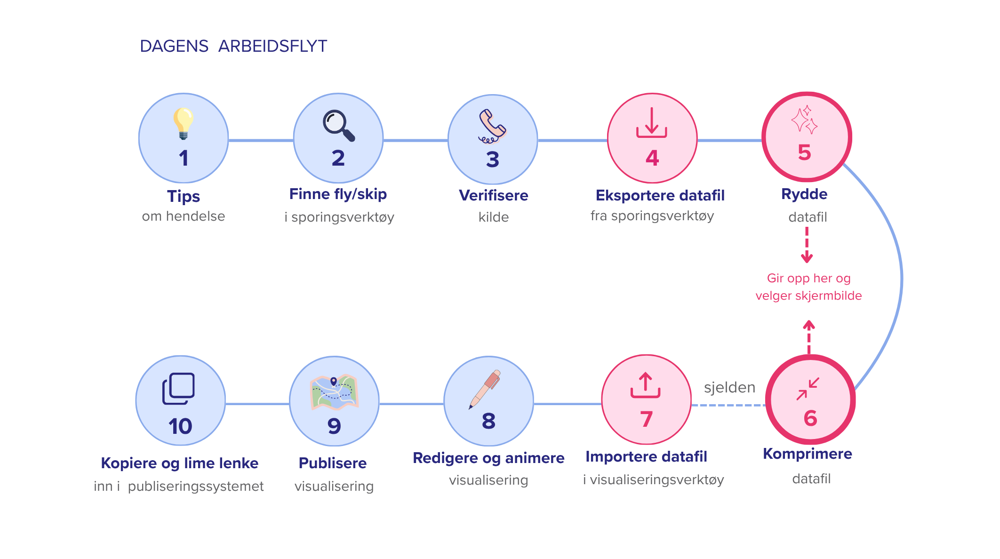
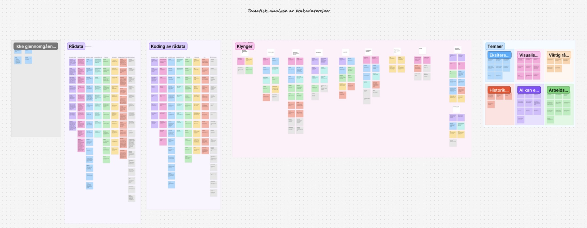
Hvorfor journalistene valgte skjermbilder
Når en sak må publiseres raskt, er skjermbildet ofte det enkleste valget. Det tar bare noen sekunder å hente ut, mens en egen kartvisualisering krever mye mer arbeid. Et animert kart kan vise når flyet snudde, hvor det sirklet og hva som skjedde underveis. Et skjermbilde viser bare ett øyeblikk av hendelsen og gir journalisten mindre kontroll over hvordan informasjonen presenteres. Når journalistene valgte skjermbildet, gikk det derfor ut over historiefortellingen.
Samtidig hadde skjermbildet en fordel. Det var tydelig at informasjonen kom fra Flightradar24, en tjeneste mange lesere kjenner fra før. Særlig flyentusiaster vet hvordan de skal lese flysporet, høydefargene og flyinformasjonen, og det gjorde skjermbildet gjenkjennelig og troverdig. I en egen visualisering kunne denne koblingen forsvinne. Løsningen måtte derfor være rask nok til å bli et alternativ til skjermbildet, og samtidig vise tydelig hvor dataene kom fra.
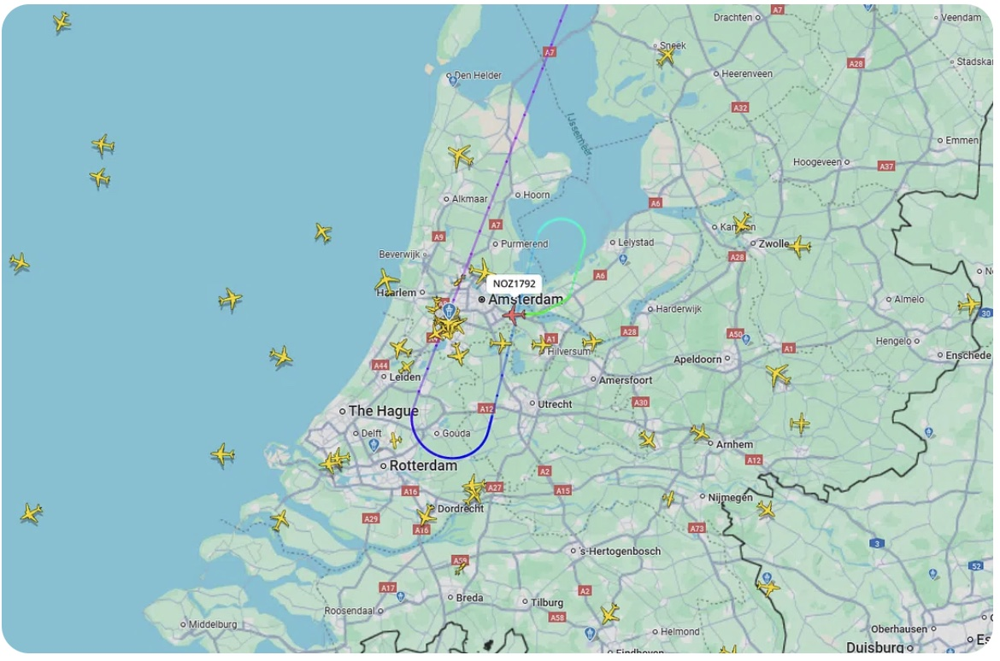
Hvem vi designet for
Ut fra intervjuene laget vi personas for de to rollene som påvirket løsningen mest. Thomas er en ung journalist som er rask med nye verktøy, men lei av løsninger som lover mer enn de leverer. Maria er redaktør, og mener fly- og båtsaker engasjerer leserne for lite, samtidig som redaksjonen har lite penger til avansert grafikk.
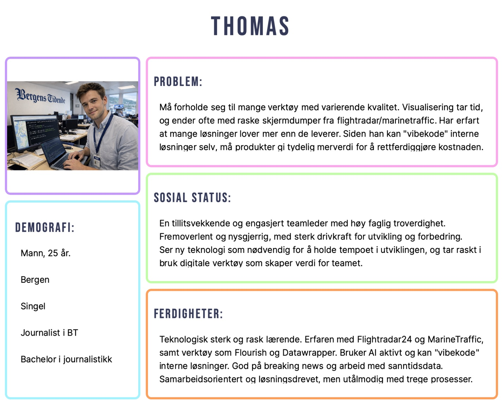
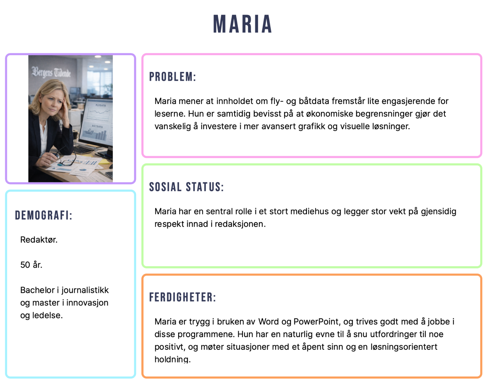
Viktigste brukerbehov
- Som journalist vil jeg kunne starte med det jeg har, enten det er et flynummer, et skipsnavn eller et tips.
- Som journalist vil jeg kunne vise hvor dataene kommer fra, slik at leseren vet hva visualiseringen bygger på.
- Som journalist med lite erfaring med kart vil jeg få hjelp gjennom prosessen uten å miste oversikten.
Prosess
Den første prototypen fulgte feil struktur
Oppdragsgiver ønsket tidlig noe å vise frem på en konferanse, så vi gikk raskt i gang med Figma Make. Vi ga verktøyet skjermbilder av everviz sitt eksisterende grensesnitt og beskrivelser av den nye funksjonaliteten, og fikk tilbake en prototype som så nesten ferdig ut.
I den første brukertesten fant deltakerne likevel ikke den nye funksjonaliteten. KI-en hadde fulgt everviz sin eksisterende fanestruktur og plassert valget av datakilder under «Customize», sammen med andre tilpasninger av kartet. Men det var valget av data som skulle være det første journalisten gjorde, og der var det lite naturlig å lete etter det. Verktøyet gjorde altså det vi ba om. Problemet lå i hvordan vi hadde rammet inn oppgaven, siden vi ba den bygge videre på det som allerede fantes før vi egentlig visste hva vi skulle lage.
Vi gikk derfor tilbake til håndtegnede skisser og så på arbeidsflyten som en helhet. Jeg foreslo å dele den opp i fire trinn, Data, Customize, Animate og Publish, slik at journalisten kunne gjøre én ting om gangen. Deretter bygget jeg en ny, sammenhengende prototype i Claude Code, slik at vi kunne teste hele arbeidsflyten med journalister og interaksjonsdesignstudenter.
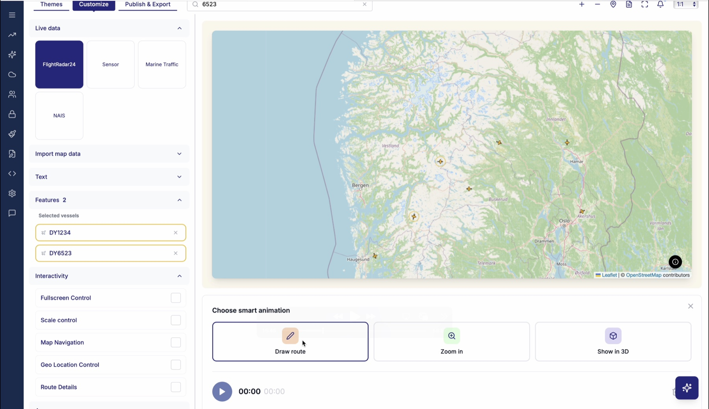
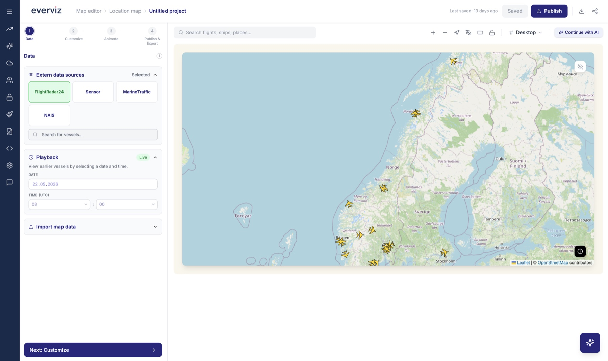
Én flyt for både nye og erfarne brukere
Testene og intervjuene viste at brukerne hadde svært ulik erfaring med kart og dataverktøy. Én journalist fortalte at mange «får panikk av å skulle lage noe med et kart», og en annen oppsummerte det med at «jo mer valg, jo vanskeligere». En mer erfaren bruker var derimot skeptisk til at verktøyet skulle bestemme rekkefølgen for ham.
Vi valgte derfor en trinnvis hovedflyt, men lot brukerne navigere fritt mellom trinnene. De som trengte veiledning, fikk en tydelig vei gjennom prosessen, mens de mer erfarne kunne gå rett til det de ville endre.
Løsningen
Kildepanel som viser hvor dataene kommer fra
Skjermbildet var troverdig fordi leserne kjente igjen kilden, og den koblingen ville vi beholde når journalistene gikk over til et interaktivt kart. Vi laget derfor et kildepanel som viser datakilde og tidspunkt direkte i visualiseringen. Journalisten får et kart som viser hele hendelsesforløpet, og leseren kan fortsatt se hva det bygger på. Det støtter også det journalistiske kravet om at det som publiseres, skal kunne etterprøves.
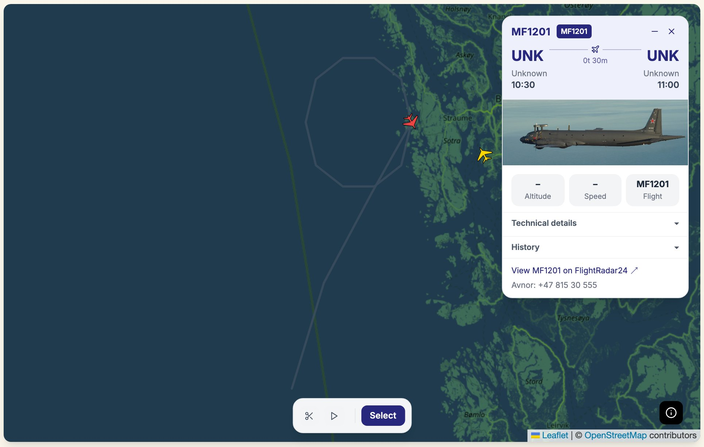
Fire trinn fra data til publisering
For at visualisering skulle bli et alternativ til skjermbildet, måtte vi forenkle flyten og fjerne blant annet eksport, filkonvertering og veksling mellom verktøy. Arbeidsflyten ble samlet i fire trinn innenfor everviz-plattformen.
I Data søker journalisten opp fly eller fartøy og velger datakilder. I Customize velger hun hvilken del av hendelsen som skal vises, og tilpasser kartet. I Animate velger hun hvordan bevegelsen skal visualiseres, og i Publish gjør hun visualiseringen klar for publisering.
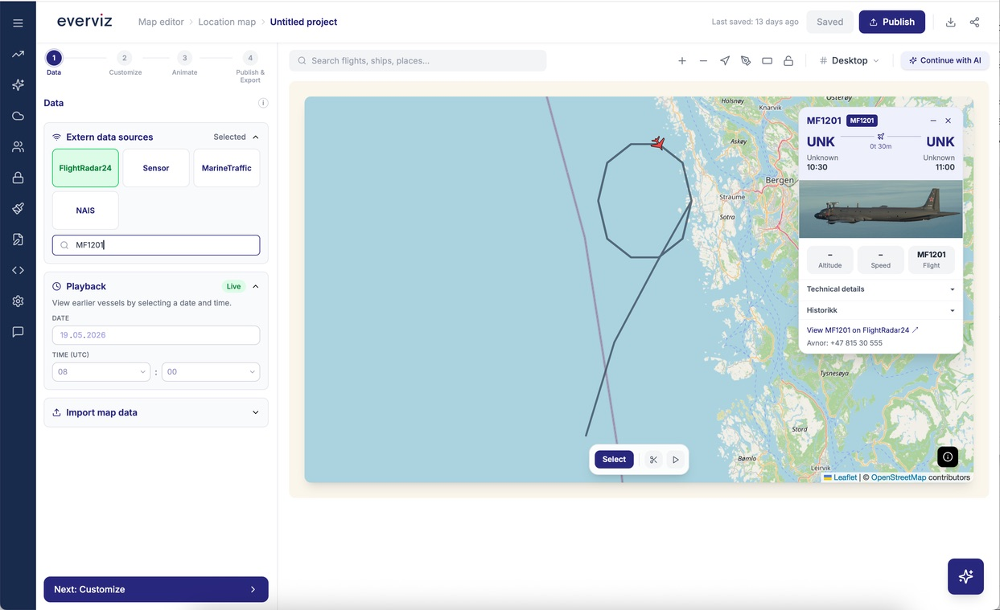
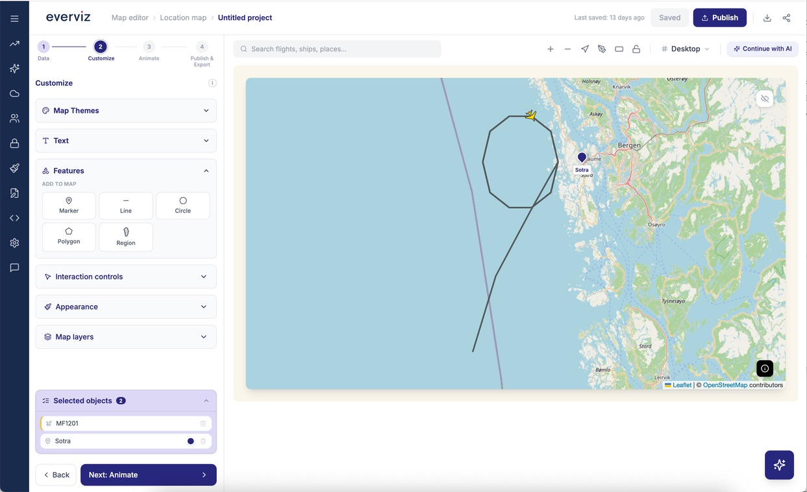
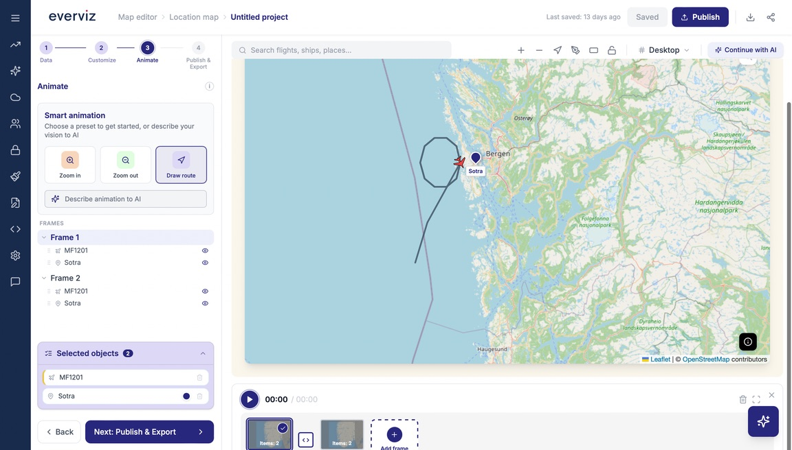
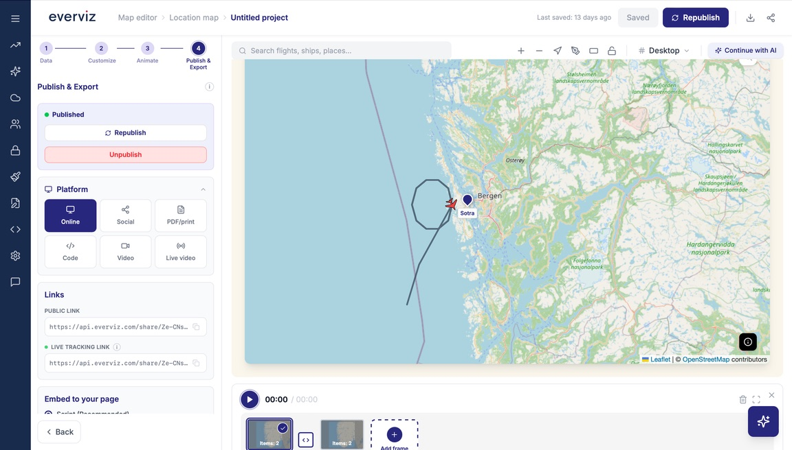
Søk med det journalisten har
Journalister har ikke alltid et flightnummer eller en eksakt identifikator. Noen ganger starter de bare med et tips eller en beskrivelse av hendelsen. Søkefeltet støtter derfor flere typer søk, blant annet flightnummer, callsign, registreringsnummer, tidsrom, geografisk område og søk med KI. Datakildene vises som lag som kan slås av og på, slik at journalisten selv velger hva som skal vises i kartet.
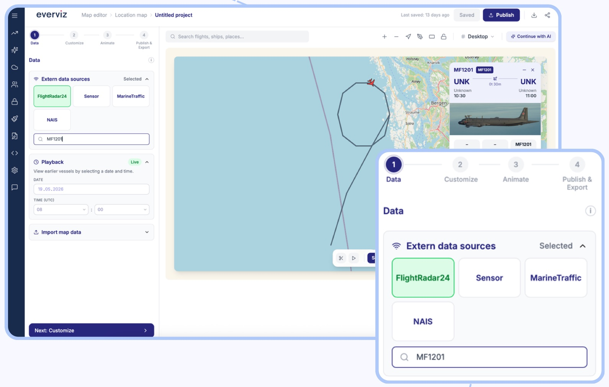
KI-agent som utgangspunkt
Som en alternativ inngang kan journalisten beskrive hva hun leter etter, for eksempel «finn flyet som fløy mellom Oslo og Bergen 17. februar». Agenten setter opp et forslag i den samme firetrinnsflyten, med kildepanel, som journalisten går gjennom og justerer før publisering. Etter erfaringen med den første prototypen var det viktig for oss at agenten bare skulle gi et utgangspunkt. Vurderingen av hva som er riktig og hva som skal publiseres, ligger fortsatt hos journalisten.
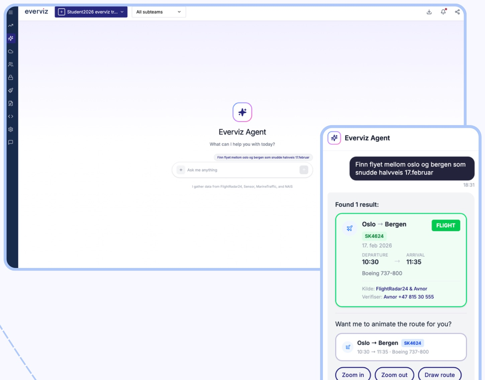
Resultat
Konseptet samlet en arbeidsflyt som tidligere kunne kreve opptil ti steg og tre til sju ulike verktøy, i fire trinn innenfor everviz-plattformen. Målet var å gjøre kartvisualisering til et reelt alternativ også under tidspress, slik at journalistene slapp å ty til skjermbilder.
Etter presentasjonen beskrev everviz' CEO konseptet som en ferdig «blåkopi» og uttrykte ønske om å implementere det. Funksjonaliteten for eksterne datakilder er siden blitt implementert i everviz.
Oppgaven jeg skrev
Prosjektet ble grunnlaget for bacheloroppgaven min, «Når KI senker terskelen i halve prosessen». Der undersøkte jeg hvordan generative KI-verktøy påvirket designprosessen i everviz express, med dobbeldiamanten som rammeverk.
Hovedfunnet var at KI ikke påvirker prosessen jevnt. Den gjorde det mye raskere å lage løsninger, men ikke å forstå problemet. KI hjalp til med å produsere mange alternativer, mens vurderingen av hvilke som faktisk traff, fortsatt var designerens. Det betyr at problemforståelsen må forsvares aktivt, fordi det er så lett å hoppe rett til noe som ser ferdig ut. Oppgaven fikk karakteren A.
Læring og refleksjon
På grunn av konferansefristen gikk vi raskt fra research til en detaljert prototype. I ettertid ser jeg at vi burde brukt mer tid på å utforske ulike strukturer gjennom skisser før vi begynte å bygge. Da kunne vi trolig oppdaget problemet med fanestrukturen tidligere.
KI-verktøy gjorde det mye raskere å gå fra idé til noe vi kunne teste, men jeg erfarte også hvor lett det er å ende opp med noe som ser ferdig ut før man vet om det løser riktig problem. KI-en klarte å lage et fungerende grensesnitt ut fra instruksene vi ga, mens vurderingen av om det var riktig ting å lage, måtte vi gjøre selv. Den detaljerte prototypen gjorde også at testdeltakerne kommenterte på visuelle elementer, når vi egentlig ville undersøke struktur og arbeidsflyt.
Jeg tar særlig med meg hvor viktig det er å forstå hvordan fagfolk faktisk jobber, og hva som får dem til å stole på et verktøy. Det er den typen arbeid jeg vil fortsette med, der målet er å gjøre komplekse systemer enkle å bruke for folk som kan faget sitt uten at de først må lære seg verktøyet.